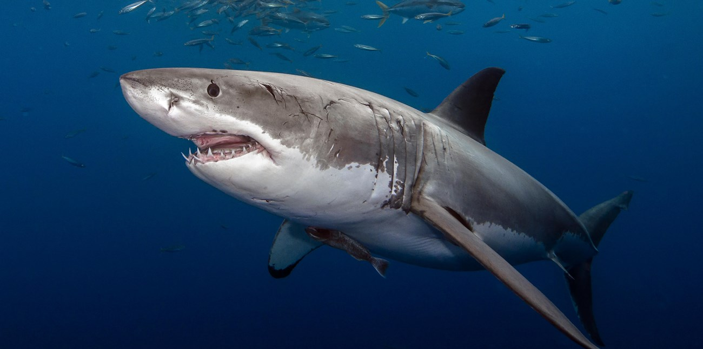
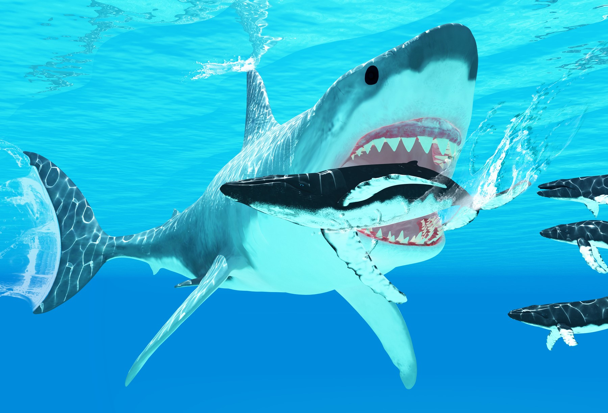

Basic info

Sharks are a group of elasmobranch fish characterized by a cartilaginous skeleton, five to seven gill
slits on the sides of the head, and pectoral fins that are not fused to the head. Modern sharks are
classified within the clade Selachimorpha (or Selachii) and are the sister group to the Batoidea
(rays and kin). Some sources extend the term "shark" as an informal category including extinct members
of Chondrichthyes (cartilaginous fish) with a shark-like morphology, such as hybodonts. Shark-like
chondrichthyans such as Cladoselache and Doliodus first appeared in the Devonian Period (419–359 million
years), though some fossilized chondrichthyan-like scales are as old as the Late Ordovician (458–444
million years ago). The earliest confirmed modern sharks (selachimorphs) are known from the Early
Jurassic around 200 million years ago, with the oldest known member being Agaleus, though records of
true sharks may extend back as far as the Permian.
Sharks range in size from the small dwarf lanternshark (Etmopterus perryi), a deep sea species that is
only 17 centimetres (6.7 in) in length, to the whale shark (Rhincodon typus), the largest fish in the
world, which reaches approximately 12 metres (40 ft) in length. They are found in all seas and are
common to depths up to 2,000 metres (6,600 ft). They generally do not live in freshwater, although there
are a few known exceptions, such as the bull shark and the river sharks, which can be found in both
seawater and freshwater, and the Ganges shark, which lives only in freshwater. Sharks have a covering
of dermal denticles that protects their skin from damage and parasites in addition to improving their
fluid dynamics. They have numerous sets of replaceable teeth.
Several species are apex predators, which are organisms that are at the top of their food chain. Select
examples include the bull shark, tiger shark, great white shark, mako sharks, thresher sharks, and
hammerhead sharks.
Sharks are caught by humans for shark meat or shark fin soup. Many shark populations are threatened by
human activities. Since 1970, shark populations have been reduced by 71%, mostly from overfishing.
Etymology

Until the 16th century, sharks were known to mariners as "sea dogs". This is still evidential in
several species termed "dogfish", or the porbeagle.
The etymology of the word shark is uncertain. The most likely etymology states that the original sense
of the word was that of "predator, one who preys on others" from the Dutch schurk, meaning 'villain,
scoundrel' (cf. card shark, loan shark, etc.), which was later applied to the fish due to its predatory
behaviour.
A now disproven theory is that it derives from the Yucatec Maya word xook
(pronounced [ʃoːk]), meaning 'shark'. Evidence for this etymology came from the Oxford English
Dictionary, which notes that shark first came into use after Sir John Hawkins' sailors exhibited one in
London in 1569 and posted "sharke" to refer to the large sharks of the Caribbean Sea. However, the
Middle English Dictionary records an isolated occurrence of the word shark (referring to a sea fish) in
a letter written by Thomas Beckington in 1442, which rules out a New World etymology.